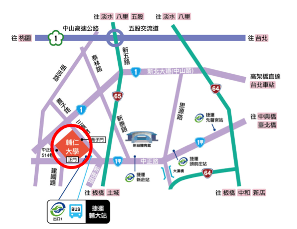
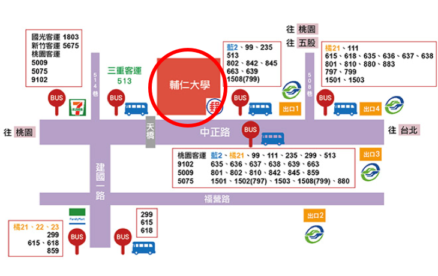
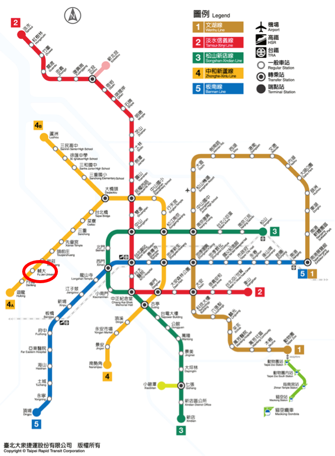

【交通地理位置】
輔仁大學地址 : 新北市新莊區中正路510號
鄰近捷運輔大站和多個公車站

【公車站牌位置】

【捷運路線】

文字和圖片擷取自輔仁大學全球資訊網>交通位置
捷運站及公車轉乘班次資訊
台北車站捷運站: 513
西門捷運站: 235、513、635、637、藍2
民權西路捷運站: 636、638、801
新埔捷運站: 99、802、842、845
輔大捷運站:
1. 輔仁大學門口公車站: 藍2、橘21、99、111、235、635、363、637、638、639、663、801、802、810、842、845、藍2、1501、1502、1503、1508、1510、1515、1803、5009、5075、5675、9102
2. 三重客運輔大站: 513
3. 建國一路輔大站: 299、615、618